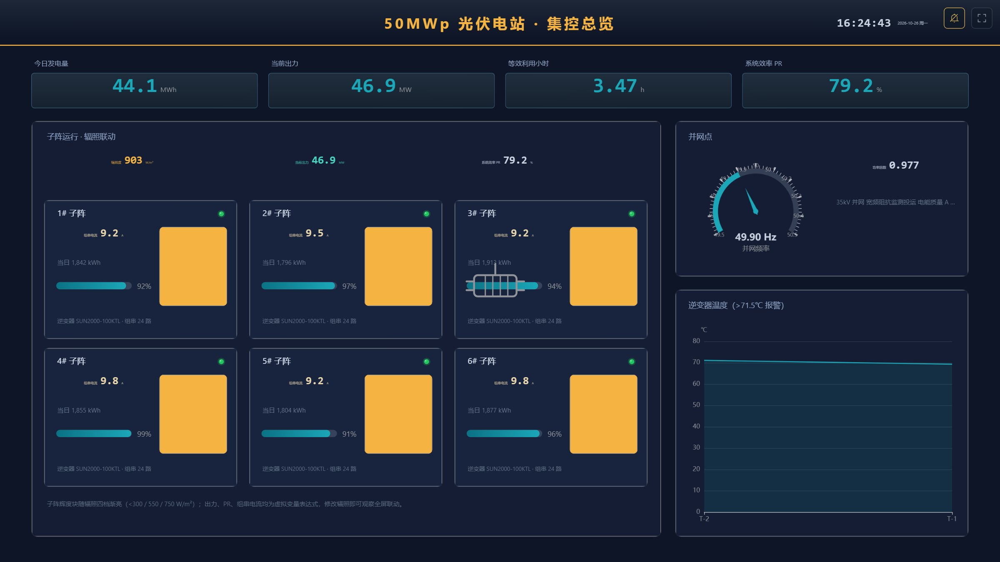
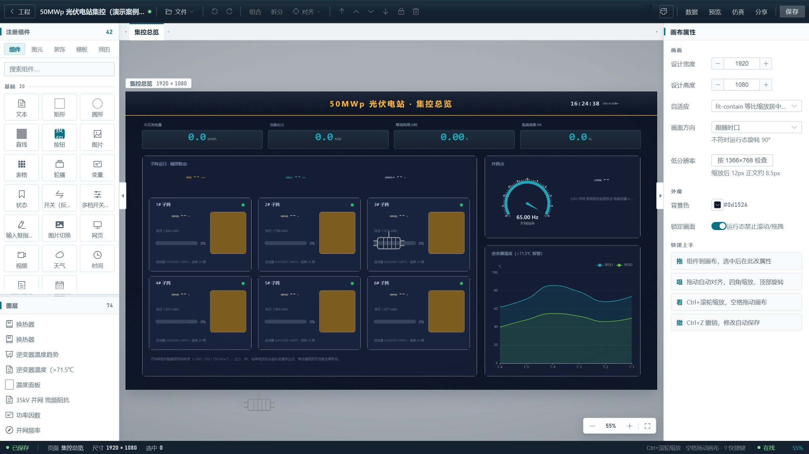
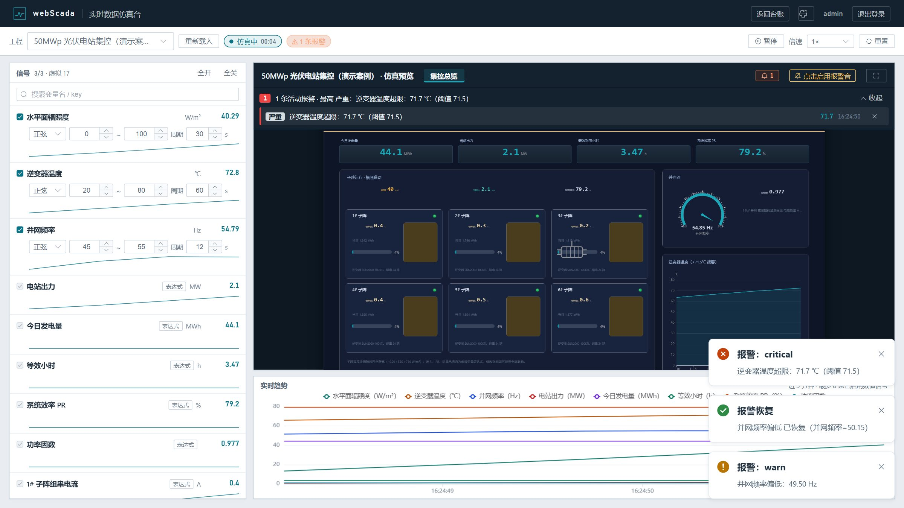
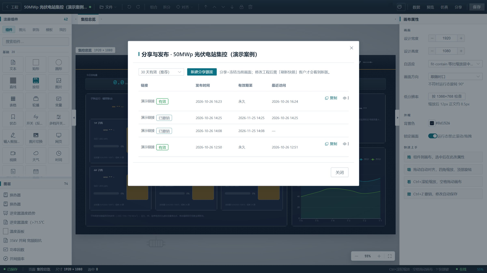

设备掉线，系统先知道
网络一断、设备一停，系统立刻生成「通讯中断」严重报警，恢复后自动解除。不再等人发现画面半天没变。
PINNED DEMOS · 置顶案例实况
NEW · 2026 年 10 月更新
不是加几个花哨的组件，而是让监控真正接得进、盯得住、查得到、有人管。
网络一断、设备一停，系统立刻生成「通讯中断」严重报警，恢复后自动解除。不再等人发现画面半天没变。
钉钉群、企业微信群、邮箱、自定义 Webhook 四路推送。没发出去自动重试，谁收到了、发了几次，都有记录。
独立的报警中心：触发、确认、恢复一条线，谁处理的、几点恢复的全都留痕，交接班不用靠微信群翻记录。
默认 5 秒记一次、保留 30 天。平均值、最大值、最小值随时看，要交报表时一键导出 CSV，Excel 直接打开。
内置实时仿真台，虚拟信号能驱动整块大屏跑起来。给客户汇报、给领导演示，不用等现场设备到位。
MQTT、Modbus TCP、OPC UA、REST、WebSocket 全都支持。点位多也不怕，几百个变量可以用 CSV 一次性导入。
SCREENSHOTS
下面都是产品真实运行界面，不是设计稿。




SCENARIOS
自带光伏、换热、空压、污水处理等示例画面，照着改就行。
WHO IT'S FOR
不想每次改个画面都等厂家上门
项目多、人手紧，交付要快
想让设备多一块拿得出手的监控大屏
WHY US
核心功能开源免费，部署一次，后面加画面、加点位不用再掏钱。预算花在实施上，而不是授权上。
Docker 一键部署，一台 2 核 4G 的普通服务器就够用。局域网内直接访问，不依赖公有云。
源码、数据、账号都在您自己手里，不被厂商绑定。有开发能力可以自己改，没有也能找我们支持。
FAQ
预约 30 分钟线上演示，用您所在行业的案例走一遍完整流程。